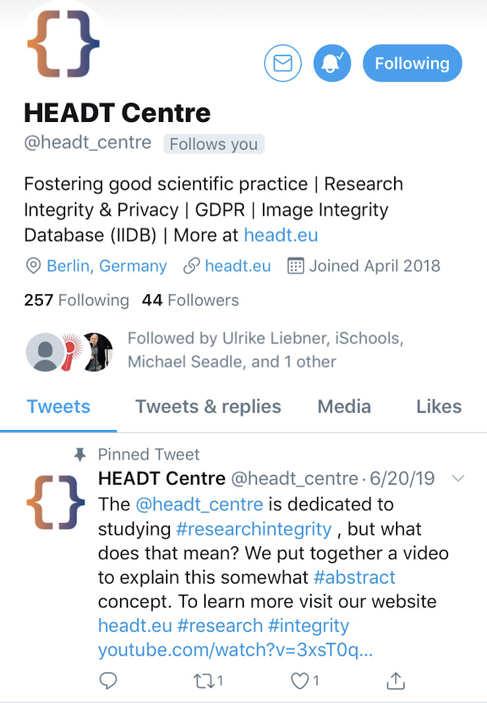

Main Projects

Workshop Series:
Three separate workshops were created for PhD students using the research of the HEADT Centre, and real-world case studies.Topics include plagiarism, data integrity, and image manipulation in research.


International Webinar
I created the slides and assisted in the presentation of this webinar for Teri (The Energy and Resources Institute) about libraries and the integrity of information. Viewers came from as far as New Zealand and India.
Article for Bibliotheks Forschung und Praxis
I assisted in the development and performance of an experiment related to fake news and info integrity online. Then I aided in the research and writing of an article for the German library journal. Article still in progress.
